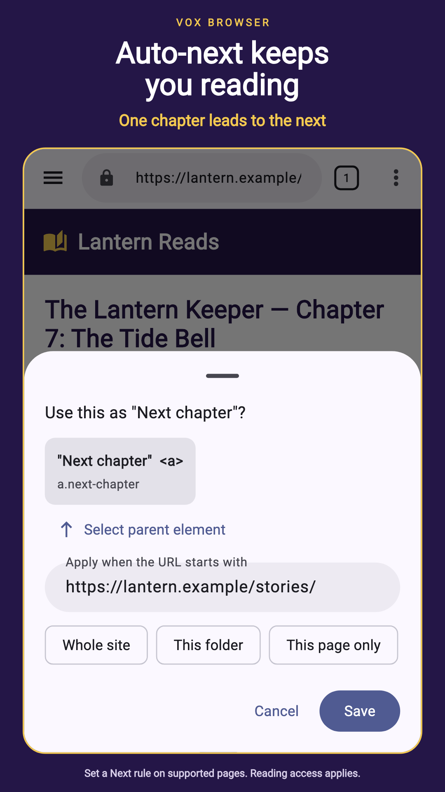
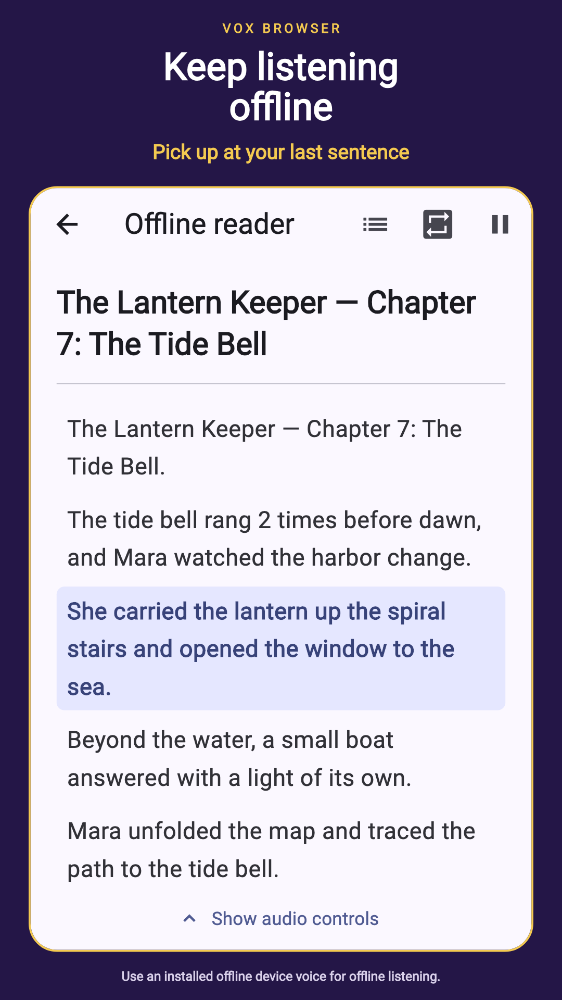
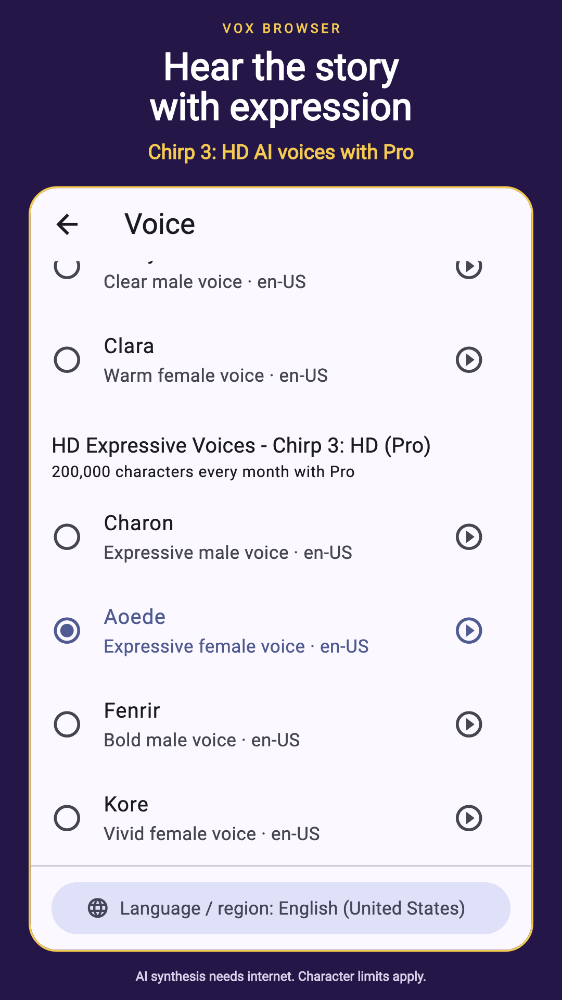

Keep chapters moving
Set a next-page or next-chapter rule on supported websites. Auto-Next follows the story so you can keep listening without reaching for your phone.
A browser built for listening
Turn web stories, articles, and everyday reading into audio. Set your next-chapter rule, press play, and let Vox keep the story moving.
Your websites. Your voice. Your reading rhythm.

Stay in the story
From a quick article to a long-running web novel, Vox brings browsing and reading aloud together.
Set a next-page or next-chapter rule on supported websites. Auto-Next follows the story so you can keep listening without reaching for your phone.
Choose a device voice and adjust speed, pitch, and volume. Follow along with sentence highlighting or settle in with a sleep timer.
Tabs, bookmarks, history, private browsing, and Reader view keep your everyday browsing close to your listening controls.

Take your reading with you
Save readable chapters and organize them into folders. Import your own books and documents, then return to the sentence where you stopped.
Save only content you have permission to copy. Website copies are temporary. Scanned PDFs and DRM-protected files aren't supported.
Find your voice
Use the text-to-speech voices on your device, or explore natural AI narration: WaveNet with Plus and expressive Chirp 3: HD with Pro.
Fine-tune your pace, pause when you need to, and use reading locks and media controls to stay in the flow.
AI voices require internet access and have character allowances. Features and plans vary by platform and release; check your app's listing for current availability.

Your first listening session
Open a story, article, or text-based webpage in Vox, or choose an imported document.
Choose your voice and pace. For a series, set the next-chapter rule on a supported page.
Listen while you cook, commute, or give your eyes a break. Pick up where you left off.
Watch Vox in action
Explore Vox Browser in these two short videos.
Bring your next chapter along
Find Vox on Google Play. Apple App Store and Amazon Appstore links will be added here when ready.
Optional reading passes and subscriptions are available in the app.
Need a hand? Visit support.